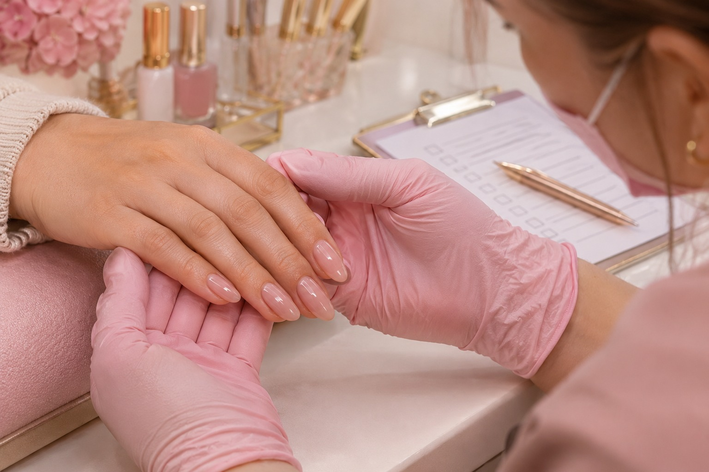

Final Practical
Assessment
Bring your learning together through consultation, preparation, application planning, structure, finishing, hygiene and professional client care.
Demonstrate your process. Explain your decisions. Reflect on your result.
Show the complete service process
- Prepare a clean workstation and organise tools and products.
- Consult with the client and assess nail suitability.
- Choose a suitable service method and explain your plan.
- Demonstrate controlled application, structure and finishing.
- Inspect the result, explain aftercare and reflect on your work.
Learning assessment, not automatic certification
This lesson helps you review your knowledge and practical readiness. A quiz result alone does not prove practical competence. Practical work should be observed and assessed by a qualified educator using appropriate local requirements.
Prepare the workstation and client
- Complete hand hygiene and prepare the work surface.
- Separate clean tools from used items and prepare single-use supplies.
- Check product labels, compatibility, condition and lamp requirements.
- Ask about sensitivities, allergies, recent reactions and service history.
- Observe nails and surrounding skin; pause if there are concerns outside your scope.

Choose a suitable service plan
- Confirm the client's requested service, length, shape and finish.
- Assess natural nail condition, width, curve and free edge.
- Choose a method and product system suited to the nail and your training.
- Explain realistic outcomes, maintenance and aftercare.
- Record relevant choices and obtain agreement before starting.
Know when to pause
Do not diagnose or work over painful, injured, inflamed or potentially infectious areas. Pause or decline the service and recommend appropriate healthcare advice.
Keep safety consistent throughout
Clean
Remove visible soil and residue before disinfection where required.
Separate
Keep clean tools and supplies apart from used items and waste.
Protect
Prevent skin contact with uncured gel and follow product instructions.
Demonstrate controlled application
- Prepare the natural nail gently without thinning or damaging it.
- Select a suitable tip, form or overlay method and check fit before application.
- Use a controlled amount of compatible product and maintain skin clearance.
- Check alignment, contact, structure and surface as you work.
- Use the approved lamp and exact curing schedule specified by the manufacturer.
Inspect from more than one angle
- Review the upper arch and apex from the side.
- Check the transverse curve and symmetry from the front.
- Inspect sidewalls, free edge and overall alignment from above.
- Consider how length and shape affect leverage and product distribution.
- Do not over-file to hide an underlying structural issue.
Complete the service with care
- Refine only after the product has cured as specified.
- Check shape, surface, sidewalls, free edge and overall balance.
- Apply compatible colour or design layers in controlled amounts.
- Keep uncured product away from skin and cure each layer as directed.
- Use the finishing product and final steps required by the system.
Clean is better than crowded
Design detail should support the service, not conceal poor structure or compromise safe product application.
Use a repeatable quality checklist
| Area | What to inspect |
|---|---|
| Natural nail & skin | No avoidable damage or uncured product on skin |
| Shape & length | Consistent, agreed and suitable for the client |
| Structure | Balanced profile, sidewalls and free edge |
| Surface & design | Clean finish, controlled detail and no obvious defects |
| Curing | Compatible lamp and full manufacturer schedule |
| Client care | Aftercare explained and concerns recorded appropriately |
Explain what you would improve
Review preparation, compatibility, application and maintenance guidance. Do not simply cover the problem.
Reassess product distribution, length and method. Correct only when safe and appropriate.
Identify the cause, then use the product system's approved correction process.
What should the educator observe?
| Criteria | Evidence of competence |
|---|---|
| Preparation & hygiene | Organised station, hand hygiene and appropriate tool handling |
| Consultation | Clear questions, nail assessment and suitable service plan |
| Product control | Controlled application, skin clearance and system compliance |
| Structure & finish | Suitable shape, balanced profile and clean finishing |
| Inspection & care | Systematic quality check, aftercare and professional reflection |
The educator should use a consistent scoring guide and local training standards. This page does not assign an official pass mark or professional licence.
Review your understanding
Answer all five questions first. Your score and explanations will appear after you submit your completed quiz.
1. What should happen before application?
2. What should you do if uncured gel touches the skin?
3. How should you inspect nail structure?
4. What determines the correct curing process?
5. What demonstrates a complete service process?
Answer all five questions, then submit your answers.